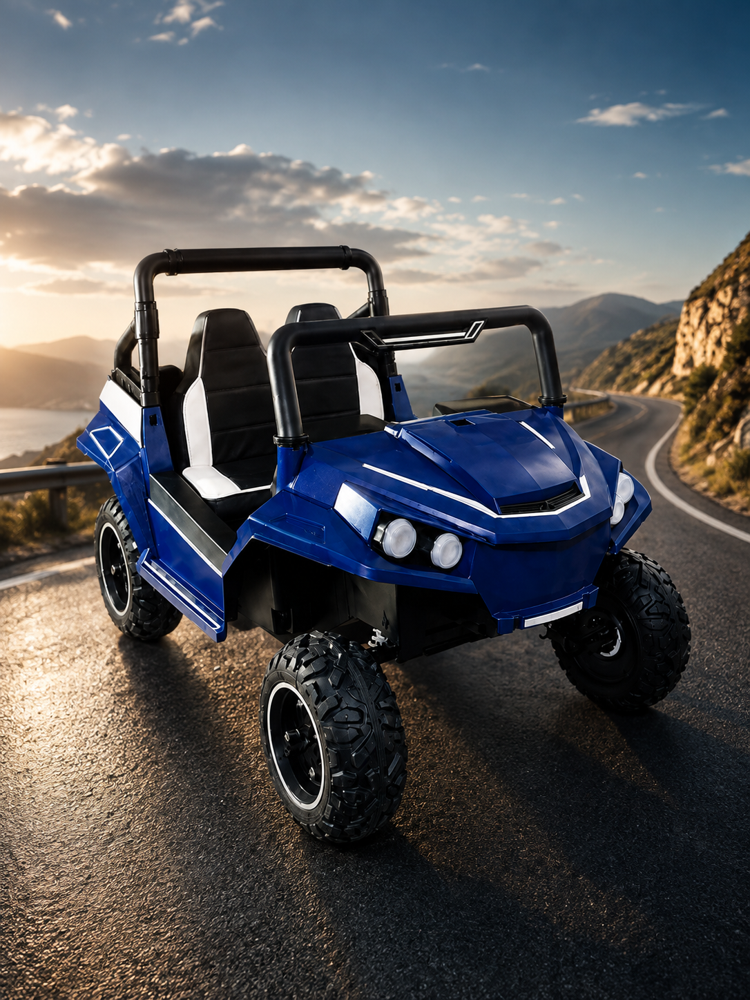
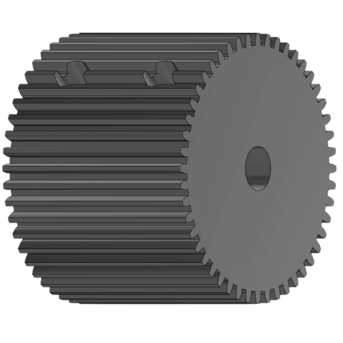
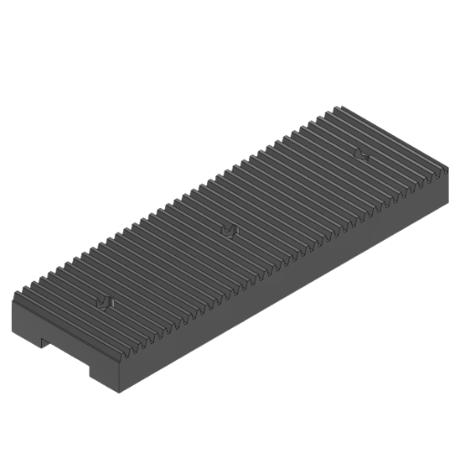
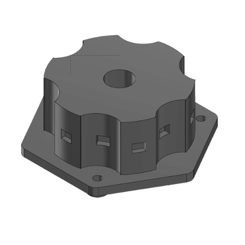
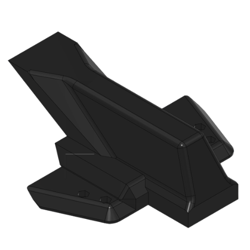
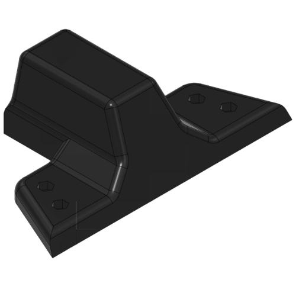
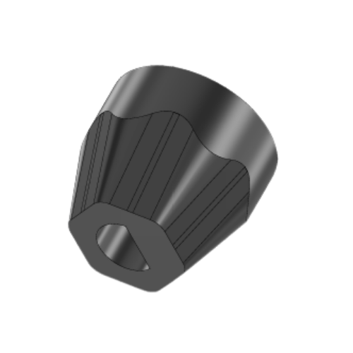
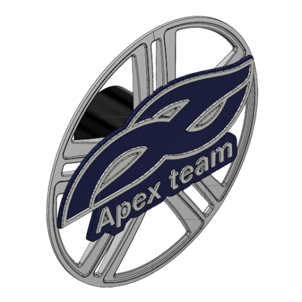
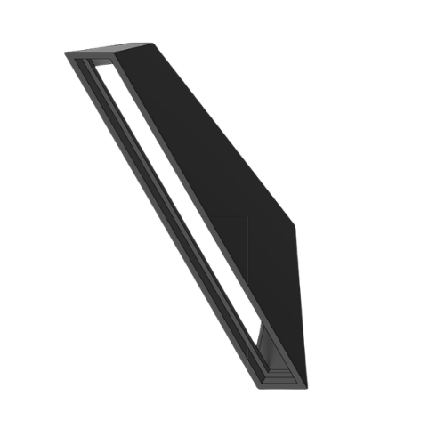

Sumário
Este manual de operação e desenvolvimento descreve todas as funções e componentes do veículo autônomo Apex Team, desenvolvido como resposta ao desafio proposto pela Mercedes-Benz ao 4º ano de Engenharia Mecatrônica da FIAP em 2026.

Este manual de operação e desenvolvimento descreve todas as funções e componentes do veículo autônomo Apex Team, desenvolvido como resposta ao desafio proposto pela Mercedes-Benz ao 4º ano de Engenharia Mecatrônica da FIAP em 2026.
Bem-vindo ao Apex Team
O Apex Team é um veículo autônomo em escala desenvolvido por uma equipe de alunos do 4º ano de Engenharia Mecatrônica da FIAP · como resposta ao desafio proposto pela Mercedes-Benz em 2026. O projeto integra visão computacional, inteligência artificial, controle embarcado, manufatura CNC e impressão 3D.
Resumo das principais funcionalidades do Apex Team para orientação rápida do operador.
| Etapa | Descrição | Componente |
|---|---|---|
| 1. Captura | Câmera fisheye 160° captura a pista em tempo real | Câmera USB |
| 2. Processamento | OpenCV: bird's eye view, binarização, detecção de faixas | Notebook / Python |
| 3. Cálculo do erro | Desvio do centro da pista calculado pelo algoritmo | PID – Python |
| 4. Transmissão | Ângulo de correção via Serial 115.200 bps | PySerial |
| 5. CAN J1939 | Mega repassa comandos ao barramento a 250 kbps | Arduino Mega |
| 6. Atuação | Servo corrige direção; RS550 ajusta velocidade | ATmegas + BTS7960 |
| 7. Monitoramento | HC-SR04 avaliam zonas e travam o veículo; Hall mede velocidade | ATmega328P dedicado + ATmegas CAN |
O notebook é a central de processamento do sistema de visão computacional. Executa todo o código Python, processa os frames da câmera em tempo real e envia os dados ao Arduino Mega via Serial USB.
| Parâmetro | Especificação |
|---|---|
| Microcontrolador | ATmega2560 |
| Frequência de clock | 16 MHz |
| Memória Flash | 256 kB (8 kB bootloader) |
| EEPROM | 4 kB |
| SRAM | 8 kB |
| Pinos digitais I/O | 54 (15 com PWM) |
| Entradas analógicas | 16 |
| UARTs hardware | 4 |
| Tensão de operação | 5 V |
| Tensão de entrada recomendada | 7–12 V |
| Interface SPI | Sim (MCP2515 – CAN) |
| SKU | A000067 |
Cada função crítica do veículo é isolada em um módulo dedicado baseado em ATmega328P, todos conectados ao Arduino Mega pelo barramento CAN 2.0B / J1939. Isso garante que uma falha de firmware em um módulo não derrube o sistema inteiro.
| Módulo | Função |
|---|---|
| PCB Motores Lado Direito | Tração + encoder (Hall) do lado direito – BTS7960 |
| PCB Motores Lado Esquerdo | Tração + encoder (Hall) do lado esquerdo – BTS7960 |
| PCB Sinalização | LEDs RGB e lanternas |
| PCB BMS | Monitoramento da bateria |
Os 4 módulos compartilham o mesmo desenho de PCB, variando apenas o firmware gravado em cada ATmega328P.
| Parâmetro | Valor |
|---|---|
| Modelo | RS550 |
| Tipo | Motor DC com escovas |
| Rotação nominal | ~30.000 RPM (sem carga) |
| Tensão nominal | 12 V DC |
| Configuração | 4WD – um motor por roda |
| Controle | PWM via driver BTS7960 |
Cada motor RS550 é acionado por uma meia-ponte BTS7960 dedicada, controlada em PWM pelo ATmega328P correspondente. O driver integra proteção contra sobrecorrente, sobretemperatura e curto-circuito.
| Parâmetro | Especificação |
|---|---|
| Tipo | Meia ponte (Half-bridge) – NovalithIC |
| Resistência de condução | 16 mΩ a 25 °C |
| Frequência PWM máxima | Até 25 kHz (roda livre ativa) |
| Corrente limite típica | 43 A |
| Proteção | Sobrecorrente, sobretemperatura, sobretensão, subtensão |
| Diagnóstico | Flag de estado + sensoriamento de corrente |
| Controle EMI | Interruptor alto canal-P (sem bomba de carga) |
| Parâmetro | 10 V | 12 V | 12,6 V | Unidade |
|---|---|---|---|---|
| Corrente em repouso | 4 | 5 | 6 | mA |
| Velocidade sem carga | 0,24 | 0,21 | 0,19 | seg/60° |
| Torque de bloqueio | 150 | 165 | 173 | kg·cm |
| Corrente de bloqueio | 7,4 | 8,0 | 8,3 | A |
| Parâmetro Geral | Especificação |
|---|---|
| Dimensões | 65 x 30 x 48 mm |
| Peso | 175 g |
| Redução | 357:1 |
| Proteção | IP67 |
| Tensão operacional | 9–12,6 V |
| Sinal de controle | PWM 500–2.500 µs / 50–330 Hz |
| Ângulo de operação | 180 graus (variante usada no projeto · também disponível em 270 graus) |
| Parâmetro | Pinhão PIN-001 | Cremalheira CRM-001 |
|---|---|---|
| Material | Aço SAE 1045 | Aço SAE 1045 |
| Módulo | M = 3 | M = 3 |
| Número de dentes | z = 15 | – |
| Dimensões | Diâm. 51 mm x alt. 60 mm | 185 x 60 x 20 mm |
| Furo central | Diâm. 12,3 mm | – |
| Rugosidade | Ra ≤ 3,2 µm | Ra ≤ 3,2 µm |
| Corrida radial | ≤ 0,05 mm | – |
| Norma | NBR 6158 (IT8) | NBR 6158 (IT8) |
| Parâmetro | Especificação |
|---|---|
| Modelo | HC-SR04 |
| Tensão | DC 5 V · Corrente: 15 mA |
| Frequência | 40 kHz |
| Alcance | 2 cm – 4 m · Ângulo: 15 graus |
| Trigger | Pulso TTL 10 µs |
| Fórmula de distância | µs / 58 = cm · ciclo mín.: 60 ms |
| Quantidade | 3 unidades (frontal, lateral direita, lateral esquerda) |
| Parâmetro | Especificação |
|---|---|
| Modelo | HR0031 / KY-035 · Sensor: 44E |
| Tensão | 3–6 V DC · Corrente: 4–8 mA |
| Sinal de saída | Digital ON/OFF – coletor aberto |
| Tempo de resposta | 2 µs |
| Corrente de saída máx. | 25 mA |
| Quantidade | 4 unidades (uma por roda) |
| Função | Conta pulsos dos ímãs de neodímio no eixo do motor |
| Parâmetro | Especificação |
|---|---|
| Tipo | Câmera USB fisheye |
| Campo de visão | 160–180 graus |
| Resolução | 2 MP |
| Taxa de quadros | Até 30 fps |
| Interface | USB 2.0 |
| Função | Captura da pista para o pipeline de visão computacional (bird's eye view + detecção de faixas/placas) |
| Parâmetro | Especificação |
|---|---|
| Tecnologia | LiFePO4 (Lítio Ferro Fosfato) |
| Tensão nominal | 12 V |
| Capacidade | 60 Ah |
| Gerenciamento | BMS-40A-4S integrado |
| Parâmetro | Mín. | Nominal | Máx. | Unidade |
|---|---|---|---|---|
| Tensão de carregamento | – | 16,8 | 18,1 | V |
| Corrente contínua de descarga | – | 40 | 40 | A |
| Proteção sobrecarga/célula | 4,2 | 4,25 | 4,3 | V |
| Proteção descarga/célula | 2,4 | 2,5 | 2,6 | V |
| Corrente de balanceamento | 95 | 100 | 105 | mA |
| Proteção sobrecorrente (-E) | 70 | 80 | 90 | A |
| Temperatura de operação | -40 | 25 | 85 | °C |
O DNI 0116 (vendido como 'relé reversor universal') é usado aqui como chave geral de energia: conecta ou desconecta a bateria LiFePO4 do restante do circuito sob comando eletrônico, funcionando como um kill switch remoto do pack — não tem relação com o sentido de giro dos motores, que é controlado inteiramente por firmware (ver seção Software · Firmware Embarcado).
| Parâmetro | Especificação |
|---|---|
| Modelo | DNI 0116 – Relé reversor universal |
| Tensão | 12 V DC · Corrente: 40/30 A |
| Terminal 30 | Positivo direto da bateria (12 V) |
| Terminal 85/86 | Lado negativo / positivo da bobina |
| Terminal 87 / 87a | Contato NA / NF |
Duas ligações seriais independentes chegam ao Arduino Mega: a USB com o notebook (comando + telemetria) e a Serial1 dedicada com o ATmega328P da camada de segurança.
| Campo | Tipo | Significado |
|---|---|---|
| servo | int, 0–180 | 90 = centro; ângulo do PID somado a 90 |
| speed | float | Velocidade efetiva (m/s); 0 quando parado, em STOP ou vermelho |
| stop | bool | True força parada imediata |
| tl | int, -1 a 2 | Estado do semáforo: nenhum/vermelho/amarelo/verde |
| lights | int, 0/1 | Iluminação do veículo |
Pacote serializado em JSON, enviado a cada 'Intervalo de comando' (200 ms por padrão) · ver detalhes do cálculo do PID na seção Software.
O Mega agrega a telemetria recebida via CAN dos módulos (RPM/corrente/status dos motores, estado da bateria via BMS, estado dos LEDs) e repassa ao notebook pela mesma porta serial, para exibição ao vivo no painel de controle (aba 'Informações do Carro').
| Parâmetro | Especificação |
|---|---|
| Protocolo | UART (Serial USB) |
| Baud rate | 115.200 bps |
| Formato | 8N1 (8 bits, sem paridade, 1 stop bit) |
| Biblioteca Python | PySerial |
| Campo | Tipo | Significado |
|---|---|---|
| status | enum: PARE / PROSSIGA | Resultado da avaliação das zonas dos 3 HC-SR04 |
Rede interna que liga o Arduino Mega aos 4 módulos ATmega328P do veículo · câmera, notebook e o ATmega328P de segurança ficam de fora dela (ver Comunicação Serial).
| Parâmetro | Especificação |
|---|---|
| Protocolo base / aplicação | CAN 2.0B / J1939 (SAE) |
| Velocidade | 250 kbps |
| Transceptor | MCP2515 via SPI · cristal 8 MHz |
| Topologia | Barramento linear · terminação 120 Ω |
| Nós na rede | 5 (1 Mega mestre + 4 ATmegas) |
| Módulo (transmissor) | SA | PGN | O que envia | Recebido por | Como envia |
|---|---|---|---|---|---|
| Arduino Mega (Mestre) | 0x01 | 0xFEF1 | Comando de tração (ângulo/velocidade) | PCB Motores Lado Direito e Lado Esquerdo | Broadcast periódico |
| PCB Motores Lado Direito | 0x10 | 0xFF00 | Telemetria: RPM, corrente, status, velocidade (Hall) | Arduino Mega (Mestre) | Broadcast periódico |
| PCB Motores Lado Esquerdo | 0x11 | 0xFF00 | Telemetria: RPM, corrente, status, velocidade (Hall) | Arduino Mega (Mestre) | Broadcast periódico |
| PCB Sinalização | 0x20 | 0xFF10 | Estado dos LEDs e lanternas | Arduino Mega (Mestre) | Broadcast periódico |
| PCB BMS | 0x50 | 0xFF40 | Tensão, corrente e temperatura da bateria | Arduino Mega (Mestre) | Broadcast periódico |
O algoritmo de navegação roda inteiramente em Python no notebook, processando cada frame da câmera USB em um pipeline de 8 etapas antes de decidir o ângulo de direção.
| Etapa | Técnica | Saída |
|---|---|---|
| 1. Captura | OpenCV VideoCapture (câmera USB) | Frame bruto (BGR) |
| 2. Perspectiva | Bird's Eye View · Extração do ROI e transformada de perspectiva | ROI 320×240 em vista aérea |
| 3. Pré-processamento | Conversão para escala de cinza | Imagem em tons de cinza |
| 4. Binarização | Threshold ajustável no painel de controle e dashboard web | Imagem binária (P&B) |
| 5. Faixas | Sliding window: 3 janelas horizontais, contagem de pixels brancos por coluna | Posição esq./dir. por janela |
| 6. Erro | Média das janelas válidas vs. centro da imagem | Erro lateral em pixels |
| 7. Controle | PID reta ou curva, conforme o erro (dual-PID) | Ângulo de correção (±90°) |
| 8. Transmissão | JSON via Serial 115.200 bps, a cada 200 ms | servo/velocidade ao Arduino Mega |
Os parâmetros do pipeline (ROI de perspectiva, limiar de binarização, erro de transição entre PID de reta e de curva, entre outros) são ajustáveis ao vivo, por sliders no painel de controle ou pelo dashboard web, e podem ser persistidos em config/config.json.
Dentro da ROI já convertida em vista aérea e binarizada, o algoritmo localiza as duas faixas da pista sem nenhuma rede neural — apenas contagem de pixels brancos por coluna.
| Passo | O que acontece |
|---|---|
| 1 | A ROI (320×240) é dividida em 3 janelas horizontais de mesma altura |
| 2 | Em cada janela, conta-se o número de pixels brancos em cada coluna |
| 3 | A coluna com mais pixels na metade esquerda vira a 'faixa esquerda'; idem à direita |
| 4 | A faixa só é considerada válida se o total de pixels superar 10% da altura da janela |
| 5 | As posições válidas das 3 janelas são combinadas por média, definindo a posição final |
| Estado | Condição | Cálculo do centro |
|---|---|---|
| both | As duas faixas válidas | Média entre esquerda e direita |
| left | Só a faixa esquerda válida | Esquerda + metade da largura da pista (estimada) |
| right | Só a faixa direita válida | Direita − metade da largura da pista (estimada) |
| none | Nenhuma faixa válida | Mantém o último erro conhecido |
Um modelo YOLOv11 roda em uma thread própria, independente da visão principal — assim, a inferência (mais lenta) nunca atrasa o laço que dirige o carro. O YOLO detecta apenas 2 classes, placa de PARE e semáforo; a cor do semáforo não vem do YOLO — é decidida por visão computacional clássica, no mesmo estilo usado na detecção das faixas.
| Evento | Critério de validação | Ação |
|---|---|---|
| Placa PARE | Confiança ≥ 80% · área ≥ 1.500 px² · diagonal mínima | Velocidade 0 por 3–5 s, depois cooldown de 3–5 s |
| Semáforo vermelho | Maior confiança entre os semáforos no frame | Velocidade 0 até detectar verde |
| Semáforo amarelo | Idem, cor classificada pelo recorte da caixa | Reduz para % configurável da velocidade base |
| Semáforo verde / nenhum | Sem detecção válida por 2 s → estado 'nenhum' | Velocidade normal configurada |
Os parâmetros abaixo são configuráveis ao vivo pelo painel de controle ou pelo dashboard web.
| Parâmetro | Valor padrão | Descrição |
|---|---|---|
| Intervalo de detecção | A cada 5 frames | Frequência de execução do YOLO (ajustável) |
| Confiança mínima (STOP) | 80% | Abaixo disso a caixa detectada é ignorada |
| Área mínima (STOP) | 1.500 px² | Evita ativar STOP com placas pequenas/distantes |
| Tempo de parada / cooldown | 3–5 s / 3–5 s | Duração do freio e intervalo mínimo antes do próximo PARE |
| Timeout do semáforo | 2 s | Sem detecção válida por esse tempo → estado 'nenhum' |
O erro lateral (em pixels) alimenta dois controladores PID independentes — ajustados separadamente para trechos retos e curvas — escolhidos automaticamente a cada ciclo.
| Termo | Fórmula | Papel |
|---|---|---|
| Proporcional (P) | Kp × erro | Resposta imediata ao desvio atual |
| Integral (I) | Ki × Σ(erro × dt) | Corrige desvio acumulado/persistente |
| Derivativo (D) | Kd × (erro − erro_anterior) / dt | Amortece mudanças bruscas |
| Saída | P + I + D, limitada a ±90° | Ângulo de correção somado a 90° e enviado ao servo |
Duas interfaces permitem operar e depurar o veículo em tempo real: este painel desktop, com visão ao vivo, e um dashboard web para acesso remoto pelo celular (próxima página).
| Aba | Conteúdo |
|---|---|
| Câmeras ao vivo | 3 vistas simultâneas: câmera da pista, vista aérea com faixas, e detecções de sinais — até 30 FPS, sem fila, sempre o frame mais recente |
| Pista e Direção | Sliders de ROI, limiar de binarização, erro de transição e os 6 ganhos do PID (reta/curva) |
| Carro e Sinais | Velocidade alvo, % de velocidade no amarelo, ângulo máximo, intervalo de comando e limiares de confiança/tamanho para PARE e semáforo |
| Informações do Carro | Telemetria ao vivo: erro da faixa, modo PID ativo, velocidade recebida/aplicada, bateria, distância dos 3 ultrassônicos e status de cada módulo |
| Conexão e Registros | Porta COM e índice de câmera, reconexão a quente, e um log colorido (info/ok/aviso/erro/RX/TX) com horário |
Segunda interface: um servidor web local (porta 5000) que espelha os principais controles do painel desktop numa página otimizada para celular.
| Rota | Método | Função |
|---|---|---|
| /api/config | GET / POST | Lê ou atualiza os parâmetros (ROI, PID, velocidade, confiança dos sinais) |
| /api/dashboard | GET | Telemetria simplificada para o Digital Twin (rpm estimado, luz ligada) |
| /api/reset | POST | Restaura os parâmetros salvos em config/config.json |
| /panel | GET | Painel HTML simplificado com sliders, otimizado para celular — é a tela da imagem acima |
O Arduino Mega recebe os comandos vindos do notebook e traduz para acionamento físico dos motores e do servo, além de uma camada extra de segurança independente contra obstáculos.
| Recurso | Comportamento |
|---|---|
| HBridgeController | Uma instância por roda (4 no total), cada uma com seus pinos RPWM/LPWM |
| move(vel) | Define a velocidade alvo (-255 a 255); o sinal define frente ou ré |
| Aceleração progressiva | Opcional: incrementa o PWM em passos (padrão 5) a cada 10 ms até o alvo, evitando arrancadas bruscas |
| stop() | Zera a velocidade e desliga o PWM imediatamente, sem rampa |
Assim como os motores, o ângulo do servo não salta direto para o valor recebido: o firmware o desloca em passos de 1° a cada 1 ms até alcançar o alvo, resultando em uma direção mecanicamente mais suave.
Um segundo microcontrolador (ATmega328P dedicado) lê 3 sensores ultrassônicos de forma não bloqueante e envia apenas 'PARE' ou 'PROSSIGA' ao Mega por uma serial dedicada (Serial1).
| Sensor | Alcance máx. | Distância de segurança |
|---|---|---|
| Frontal | 200 cm | ≤ 40 cm aciona PARE |
| Lateral esquerdo | 100 cm | ≤ 25 cm aciona PARE |
| Lateral direito | 100 cm | ≤ 25 cm aciona PARE |
| Código | Nome da Peça | Processo | Material | Observações |
|---|---|---|---|---|
| PIN-001 | Pinhão de Direção | Tornear + Fresar CNC | SAE 1045 | M=3, z=15, Diâm. 51x60 mm |
| CRM-001 | Cremalheira de Direção | Fresamento CNC | SAE 1045 | 185x60x20 mm |
| CRW-001 | Hub de Roda c/ Encoder | Usinagem CNC | SAE 1045 | Suporte sensor Hall |
| ESV-001 | Suporte do Servo | CNC + Impressão 3D | PLA/Aço | Fixação DS51150 |
| EIX-001 | Eixo de Transmissão | Tornear CNC | SAE 1045 | Motores às rodas |
| – | Case Servo Superior | Impressão 3D (FDM) | PLA | Proteção superior do servo |
| – | Case Servo Inferior | Impressão 3D (FDM) | PLA | Base de fixação |
| – | Conector de Direção | Impressão 3D (FDM) | PLA | Acoplamento servo-cremalheira |
| – | Calota Apex | Impressão 3D (FDM) | PLA | Elemento estético das rodas |
| – | Lanterna | Impressão 3D (FDM) | PLA | Suporte dos LEDs traseiros |








| Verificação | Instrumento | Critério |
|---|---|---|
| Diâmetro externo | Paquímetro digital 0,01 mm | Diâm. 51 mm |
| Altura total | Paquímetro digital | 60 mm |
| Furo central | Calibre passa/não-passa | Diâm. 12,3 mm |
| Perfil dos dentes | Gabarito de módulo M=3 | Conforme perfil |
| Corrida radial | Relógio comparador | ≤ 0,05 mm |
| Rugosidade | Rugosímetro | Ra ≤ 3,2 µm |
| Sistema | Parâmetro | Valor |
|---|---|---|
| Propulsão | Motores | 4x RS550 ~30.000 RPM | 4WD |
| Propulsão | Driver | BTS7960 – 43 A típico, PWM até 25 kHz |
| Direção | Servo | DS51150-12V – 150 kg·cm / 12 V / IP67 |
| Direção | Controle | PWM 500–2.500 µs / 50–330 Hz |
| Direção | Mecanismo | Pinhão M=3 z=15 + Cremalheira SAE 1045 |
| Energia | Bateria | LiFePO4 12 V / 60 Ah |
| Energia | BMS | BMS-40A-4S – 40 A contínuo, 4 células, balanceamento 100 mA |
| Energia | Chave geral | Relé DNI 0116 – 40/30 A, 12 V |
| Sensores | Ultrassônico | 3x HC-SR04 (frontal + 2 laterais) – 2 cm a 4 m, 15 graus |
| Sensores | Hall / Encoder | 4x KY-035 (44E) + ímã de neodímio |
| Sensores | Câmera | USB fisheye 160–180 graus, 2 MP, 30 fps |
| Processamento | Visão | Notebook – Python 3 / OpenCV |
| Processamento | ECU central | Arduino Mega 2560 – ATmega2560, 16 MHz |
| Processamento | Periféricos | 4x ATmega328P dedicados |
| Processamento | Segurança | ATmega328P dedicado (fora da CAN) – Serial1 (PARE/PROSSIGA) |
| Comunicação | Notebook → Mega | UART USB 115.200 bps 8N1 |
| Comunicação | Mega → ATmegas | CAN 2.0B / J1939 – 250 kbps / MCP2515 |
| Software | Visão | Python + OpenCV – bird's eye view + PID |
| Software | IA | YOLO – dataset personalizado |
| Software | Firmware | C++ / Arduino Framework |
| Mecânica | Fabricação | CNC SAE 1045 + Impressão 3D PLA |
| Mecânica | Norma | NBR 6158 – IT8 | Ra ≤ 3,2 µm |
| Equipe | Time | Apex Team – FIAP Mecatrônica 4º Ano |
| Projeto | Desafio | Mercedes-Benz 2026 | São Paulo – SP |